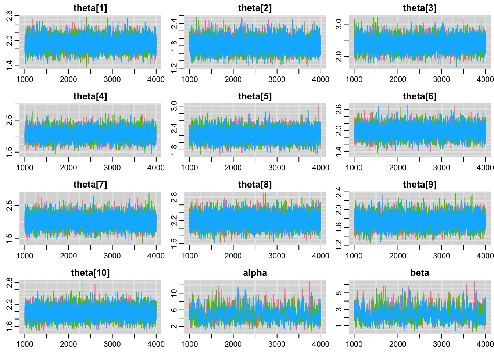
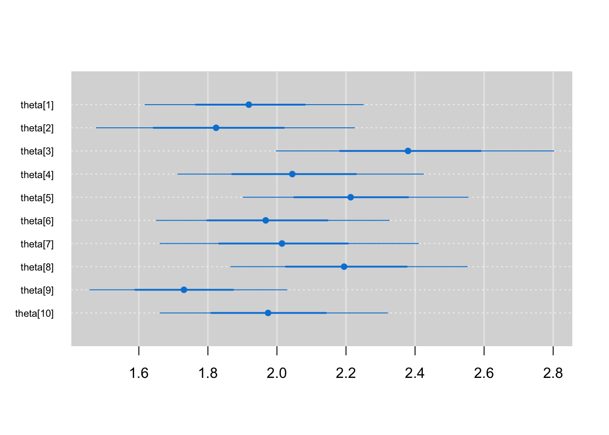

6 Session 5: Implementing Bayesian models
6.1 Learning Objectives
In this lesson, you will learn:
Overview of the Bayesian modeling process
Introduction to MCMC
Programming model in software
Evaluating model diagnostics
6.2 Overview of the Bayesian modeling process
In the first part of the lecture, we established the major reasons to use Bayesian inference and briefly reviewed the fundamentals of probability, Bayes’ rule, and distributions. We ended by walking through two examples that allowed us to practice model specification.
In this lesson, we will explain and demonstrate how to ‘translate’ between statistical notation and model code, with particular emphasis on implementing Bayesian models with MCMC software.
6.3 Markov chain Monte Carlo
MCMC is a general method where samples are drawn sequentially from a proposal distribution that depends on the last value in the sequence. These draws form a Markov chain because the probability of accepting a proposed value of \(\theta\) in iteration \(j\) depends on the value of \(\theta\) in iteration \(j-1\). Each iteration improves the proposal distribution until it eventually approximates (converges upon) the posterior distribution.
Two popular MCMC algorithms are the Metropolis-Hastings algorithm and the Gibbs sampler. Both procedures are highly random, although Gibbs sampling is more efficient at proposing values by reducing this randomness. The software OpenBUGS and JAGS both utilize Gibbs sampling and can interface with R using packages such as ‘rjags’ and ‘R2OpenBUGS’.
Hamiltonian Monte Carlo (HMC) and its variant No-U-Turn sampler are much more computationally intensive, but more efficient algorithms that are available in the imperative programming language Stan. Popular R interface packages include ‘rstan’, ‘rethinking’, and ‘brms’.
Chapter 8 of McElreath’s ‘Statistical Rethinking’ (2016) provides a great overview of MCMC algorithms at the level suitable for applied practitioners, while greater detail of the algorithms can be found in chapters 11-12 of ‘Bayesian Data Analysis’ (Gelman et al. 2014).
6.3.1 Inference from iterative simulation
Using MCMC simulation software frees us from having to compute the posterior analytically, but adds the following considerations:
The simulation must be run long enough such that the distribution of \(\theta\) closely approximates the true posterior distribution
Iterative simulation can result in within-sequence correlation, such that inference can be less precise than with independent draws
To address these issues, simulation can be run for multiple sequences and initiated at dispersed starting points within the parameter space. It is highly recommended that at least 3 chains are run. If the runs are initiated with dispersed starting values, yet ultimately describe the same posterior, we say that the model has converged.
One rule of thumb is to aim for 3000-4000 ‘independent’ posterior samples. Since each MCMC sample depends on the previous proposal, the samples are not truly independent. In practice, trial runs of the model can be used to assess autocorrelation within chains. We can then set the number of iterations and the thinning interval to obtain the desired number of ‘independent’ posterior samples.
Below, we’ll use an example below to illustrate how to specify starting values, determine chain length, and perform posterior predictive checks.
6.4 Programing statistical models
Let’s revisit the snow fence example from the previous lecture. We have already described the model both mathematically and with a DAG. Next, we need to implement the set of equations in an MCMC software.
In this lesson, we will use JAGS interfaced from R with the package ‘rjags’. JAGS shares some syntax with R, but is not declarative and not vectorized. In practice, this means that the order of statements does not matter, and that operations that apply to a vector of values must be contained within a for loop.
To start a model, write a for loop for the number of observations (N) in the dataset. Then, specify the likelihood within that data loop.
\(y_i \sim Poisson(\theta_i \cdot x_i)\)
"model{
for(i in 1:N){
y[i] ~ dpois(theta[i]*x[i])
}
}"Note that the subscript indexing from the mathematical notation is retained as indices within square brackets.
Next, consider the probability distribution of \(\theta_i\).
\(\theta_i \sim Gamma(\alpha, \beta)\)
"model{
for(i in 1:N){
y[i] ~ dpois(theta[i]*x[i])
theta[i] ~ dgamma(alpha, beta)
}
}"The distribution for \(\theta_i\) also occurs within the data loop, because our model specifies that each observation has its own rate of invasive plants, drawn from a gamma distribution.
We provide priors for the hyperparameters \(\alpha\) and \(\beta\).
\(\alpha \sim Gamma(2, 1)\)
\(\beta \sim Exponential(1)\)
"model{
for(i in 1:N){
y[i] ~ dpois(theta[i]*x[i])
theta[i] ~ dgamma(alpha, beta)
}
alpha ~ dgamma(2, 1)
beta ~ dexp(1)
}"These hyperparameters are scalars that must be defined outside of the data loop. As root nodes, their parameters are numerical values.
Finally, let’s calculate the mean and standard deviation of the population-level invasive plant rate. We know that the mean of a gamma distribution is \(\frac{\alpha}{\beta}\), and the variance is \(\frac{\alpha}{\beta^2}\).
"model{
for(i in 1:N){
y[i] ~ dpois(theta[i]*x[i])
theta[i] ~ dgamma(alpha, beta)
}
alpha ~ dgamma(2, 1)
beta ~ dexp(1)
pmean_theta <- alpha/beta
pstd_theta <- sqrt(alpha/beta^2)
}"6.4.1 Compiling a JAGS model
Fitting a JAGS model consists of two steps. The first step is to compile the model object with jags.model(). This function requires requires the model code, the list of input data, the starting values, and the number of chains.
There is also an optional adaption phase, which has a default of 1000 iterations. This is equivalent to discarding the first 1000 sampes as a ‘burn-in’, during which the samplers are adapting behavior to maximize efficiency.
Model code
I typically recommend that model code be saved as a separate model file, which allows for different versions to be tested without cluttering up the main script. But for simple cases, we can specify the model as a character string and later use textConnection() to read in the model.
mstring <- "
model{
for(i in 1:N){
y[i] ~ dpois(theta[i]*x[i])
theta[i] ~ dgamma(alpha, beta)
}
alpha ~ dgamma(2, 1)
beta ~ dexp(1)
pmean_theta <- alpha/beta
pstd_theta <- sqrt(alpha/beta^2)
}
"List of input data
To fit the model we have specified, we will need to provide data for the variables y (number of invasive plants), x (footprint area of snow fence), and N (number of observations). These data must be provided as a list, with list element names that correspond to the variable names used in the model code.
sf <- data.frame(y = c(138, 91, 132, 123, 173, 124, 109, 154, 138, 134),
x = c(72, 50, 55, 60, 78, 63, 54, 70, 80, 68))
datlist <- list(y = sf$y,
x = sf$x,
N = nrow(sf))Initial values
Next, we need to consider appropriate and dispersed starting values. Initial values are only needed for root nodes, in this case for \(\alpha\) and \(\beta\). For simple models, we can skip this input and random starting values will be generated from the prior distribution. In more complex cases, we might want to specify realistic but dispersed starting values to speed the time to convergence.
Initial values must be appropriate for the domain of the prior. For example, since \(\alpha\) has a exponential distribution, the model will error if the starting value for \(\alpha\) is negative.
The function jags.model() requires initial values as a list of lists; the length of the list must correspond to the number of chains specified. Since we desire 3 independent chains, our list of initials will contain 3 lists, each with two elements (alpha and beta). Again, list element names that correspond to the variable names used in the model code.
Crude estimates of parameter values are a good starting point for specifying initial values. In this case, we will compute the sample mean for the rate of invasive plant occurrence.
mean(sf$y/sf$x)## [1] 2.028698On average, there are about 2 invasive plants per square meter across all snow fences. The rate parameter is specified as a gamma distribution, and the mean of a gamma distribution is \(\alpha/\beta\). We will specify starting values for alpha and beta equivalent to 0.5, 2, and 20.
initslist <- list(list(alpha = 0.5, beta = 1),
list(alpha = 4, beta = 2),
list(alpha = 30, beta = 1.5))Finally, we can compile the model.
jm <- jags.model(file = textConnection(mstring),
data = datlist,
inits = initslist,
n.chains = 3)6.4.2 Sampling the posterior distribution
After the model object has compiled, we will monitor the posterior samples using coda.samples(). This function requires a jags model object, names of variables to monitor, and the number of iterations to monitor.
There is also an optional thinning argument, which is set to 1 by default. Thinning can be used to save every \(i\)th element of the posterior chain, which can produce more ‘independent’ samples when chains are autocorrelated.
jm_coda <- coda.samples(model = jm,
variable.names = c("theta", "alpha", "beta",
"pmean_theta", "pstd_theta"),
n.iter = 3000)3000 iterations for each of 3 chains ran quickly in our example.
6.5 Evaluating model diagnostics
Hooray! The model ran! But before we can summarize the posterior and move on making inferences, we must examine a series of model diagnostics and re-run the model if necessary.
There are at least two goals of evaluating the posterior samples:
whether chain length was sufficient
whether the chains converged
If either the number of ‘independent’ samples or convergence among chains falls short, we will have to re-run the model before making inferences.
Visual assessment
First thing to check are the traceplots, from which we can roughly assess convergence and autocorrelation simultaneously.
Here, we use the traplot() function from the package mcmcplots, which allows us to specify which parameter to visualize.
traplot(jm_coda,
parms = c("theta", "alpha", "beta"))
The traceplots for the theta parameters are textbook ‘fuzzy catepillars’; the values are stable over time, while the three chains are very well-mixed. We can consider the theta parameters converged and of sufficient run length.
The alpha and beta parameters are also converged, in that the 3 chains are well-mixed and stable. However, there is some autocorrelation present. We will switch to using the function mcmcplot, which provides the traceplot, autoccorelation, and density for specified parameters as an html file that can be viewed in a web browser.
mcmcplot(jm_coda,
parms = c("alpha", "beta"))In the autocorrelation plot, the correlation coefficient between the parameter value at iteration \(t\) and its value at iteration \(t-l\) are visualized, where \(l\) represents the lag or offset between iterations. A correlation coefficient near 1 indicates that samples are highly autocorrelated, whereas correlation coefficients near 0 indicate approximately independent samples.
For alpha and beta, we see that autocorrelation is high until about 20, indicating that thinning by 20 might be appropriate.
Rerunning the model
We can re-run the model now and set thinning to 20. But if we are only saving every 20th posterior sample, we should inflate the number of iterations by a factor of 20 to keep the same number of samples.
jm <- jags.model(file = textConnection(mstring),
data = datlist,
inits = initslist,
n.chains = 3)
jm_coda <- coda.samples(model = jm,
variable.names = c("theta", "alpha", "beta",
"pmean_theta", "pstd_theta"),
n.iter = 3000*20,
thin = 20)mcmcplot(jm_coda,
parms = c("alpha", "beta"))Notice that the model took appreciably longer to run this time, as we have specified that the MCMC be run for 20 times the previous number of iterations. However, we now have posterior samples for alpha and beta that are relatively independent.
Numerical confirmation of convergence
To quantify convergence, we can use the potential scale reduction factor or \(\hat{R}\), which compares within-chain to between-chain variance for each parameter. In the ‘coda’ package (which is automatically loaded with ‘rjags’), the function for calculating \(\hat{R}\) is gelman.diag().
gelman.diag(jm_coda, multivariate = FALSE)## Potential scale reduction factors:
##
## Point est. Upper C.I.
## alpha 1 1.00
## beta 1 1.00
## pmean_theta 1 1.00
## pstd_theta 1 1.00
## theta[1] 1 1.00
## theta[2] 1 1.00
## theta[3] 1 1.00
## theta[4] 1 1.00
## theta[5] 1 1.00
## theta[6] 1 1.00
## theta[7] 1 1.00
## theta[8] 1 1.00
## theta[9] 1 1.01
## theta[10] 1 1.00\(\hat{R} \leq 1.2\) is generally indicates convergence. Here, all of the parameters have converged, which confirms our visual assessment of convergence.
Plotting model output
We can visualize the posterior distributions of invasive plant rates with the function caterplot().
caterplot(jm_coda,
parms = "theta",
reorder = FALSE)
We can see that the rates for each snow fence (\(\theta_i\)) are indeed distributed about the sample mean of 2 invasive plants per square meter.
How do the fence-level rates compare with the regional-level rates? We can use the summary() function on the model output samples.
summary(jm_coda)[[1]]## Mean SD Naive SE Time-series SE
## alpha 4.940838 1.7791334 0.018753713 0.020548734
## beta 2.362988 0.8990146 0.009476446 0.010344713
## pmean_theta 2.133635 0.3355905 0.003537434 0.003613381
## pstd_theta 1.009152 0.2599937 0.002740575 0.002992529
## theta[1] 1.922982 0.1604328 0.001691110 0.001668412
## theta[2] 1.830783 0.1898067 0.002000739 0.002020824
## theta[3] 2.384865 0.2045426 0.002156068 0.002158823
## theta[4] 2.050765 0.1813432 0.001911525 0.001931191
## theta[5] 2.215917 0.1664404 0.001754436 0.001753172
## theta[6] 1.972456 0.1739080 0.001833151 0.001782088
## theta[7] 2.019942 0.1887418 0.001989513 0.001969378
## theta[8] 2.199109 0.1749615 0.001844256 0.001887350
## theta[9] 1.733456 0.1452889 0.001531480 0.001562532
## theta[10] 1.977165 0.1674572 0.001765154 0.001781153The regional rate of invasive plants has a posterior mean of ~2.4 and a posterior standard deviation of ~1. Thus, this hierarchical model acts as something of a random effects model, allowing us to account for variation among individual snow fences while reporting statistics at the regional level. The distinction between fixed and random effect is blurred in hierarchical Bayesian modeling, and there can be multiple ways of specifying random effects.
Interactive problem: Logistic regression model
Using the steps described above, work in small groups to code, run, and diagnose the logistic regression model for moth coloration.
moths <- data.frame(site = rep(1:7, each = 2),
morph = rep(1:2, times = 7),
distance = rep(c(0, 7.2, 24.1, 30.2, 36.4, 41.5, 51.2), each = 2),
placed = rep(c(56, 80, 52, 60, 60, 84, 92), each = 2),
removed = c(13, 14, 28, 20, 18, 22, 9, 16, 16, 23, 20, 40, 24, 39))Helpful hints:
Use the JAGS manual to find the parameters of
dbin, the binomial distributionNo need to specify initials for this regression model
Can add replicated data to evaluate model fit. Create a new variable
y.repbeneath the likelihood and give it an identical distribution.
Once the model has converged, plot and summarize posterior parameters of interest to address the following questions:
Does the probability of predation vary with distance fom Liverpool?
Does the probability of predation differ between morphs?
Does the effect of distance on predation differ between morphs?
How might we evaluate model fit?
6.5.1 Acknowledgements
These materials are derived primarily from Bayesian course materials developed and taught by Kiona Ogle. Additional ideas and code have been adapted from materials authored by Kelly Heilman, Robert Shriver, and Drew Peltier. The texts ‘Doing Bayesian Data Analyis’ (Kruschke 2015), ‘Statistical Rethinking’ (McElreath 2016), and ‘Bayesian Data Analysis’ (Gelman et al. 2014) were strongly influential and recommended references.